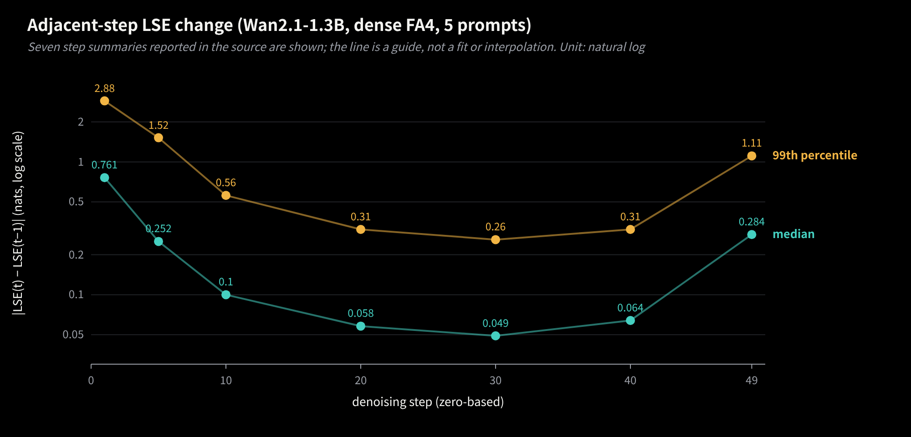
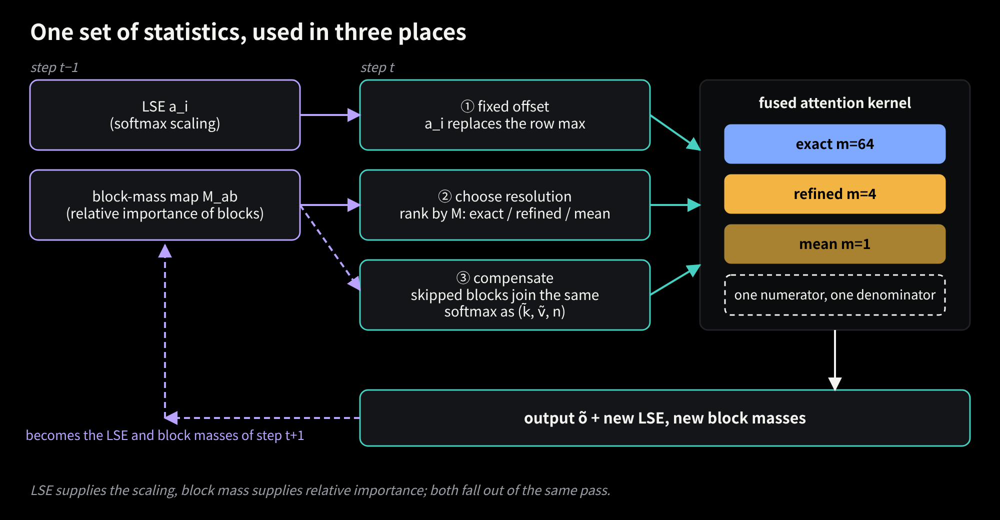
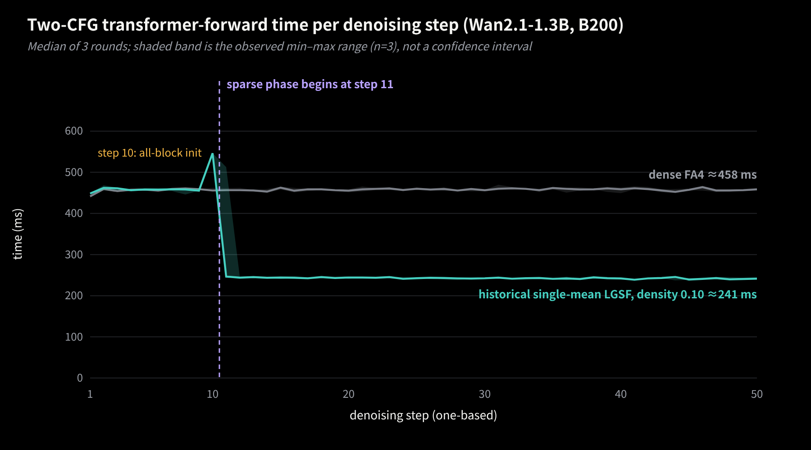
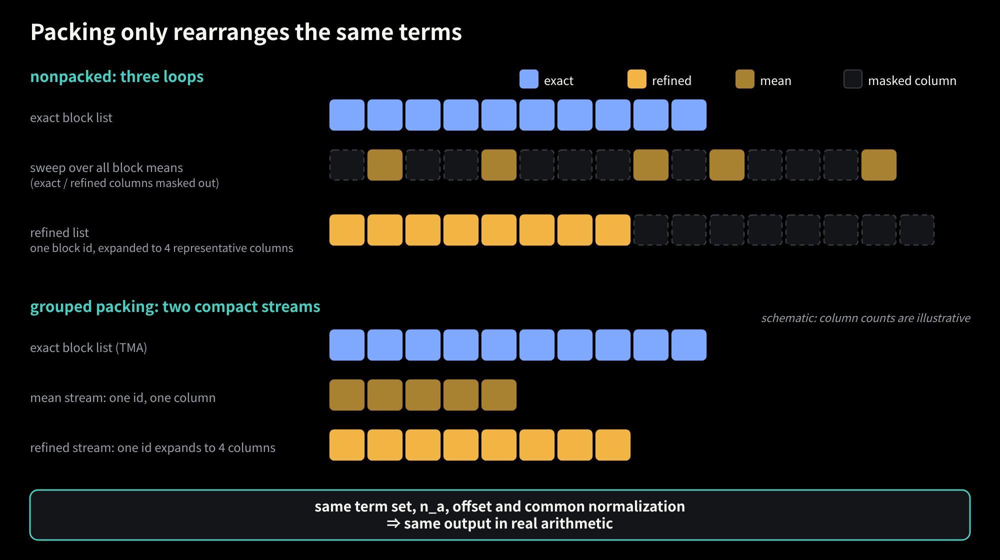
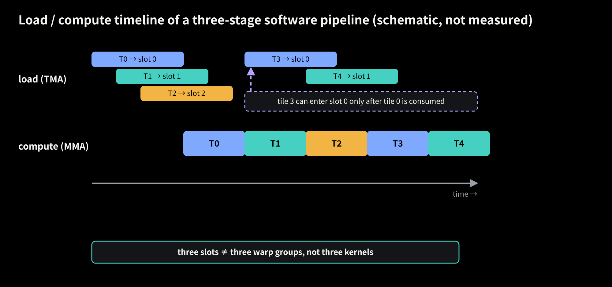
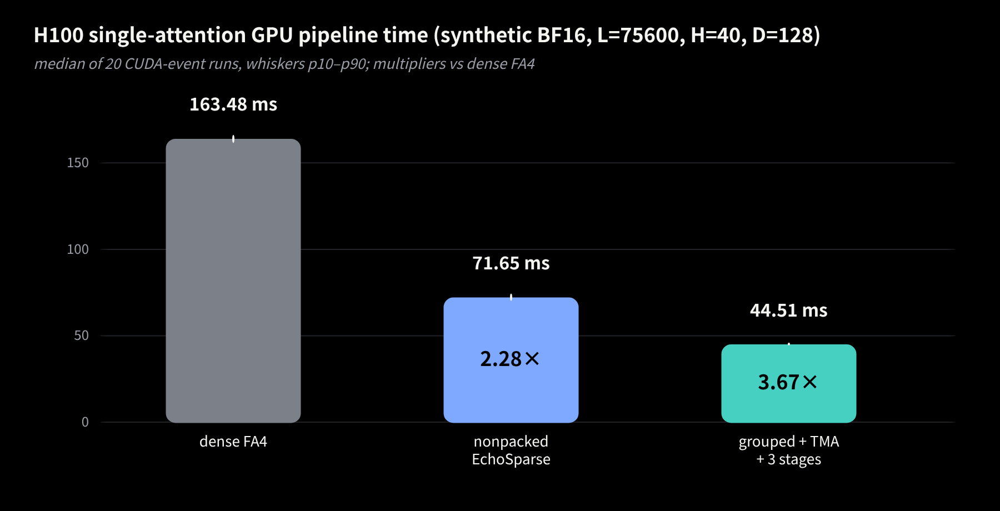
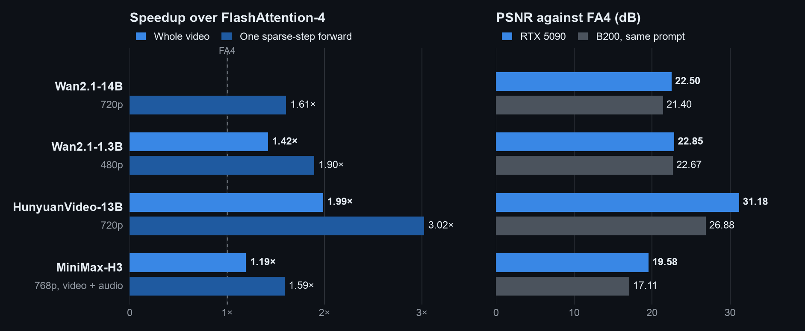

EchoSparse: Letting Last Step's Statistics Steer This Step, Approximating at Multiple Resolutions Instead of Dropping, and Packing Sparse Attention Tightly
By EchoSparse Team
Self-attention in a video diffusion transformer runs over a very long sequence. Wan2.1-14B at 720p and 81 frames has about 75,600 tokens per attention layer, dozens of layers per forward pass, and 50 denoising steps per video. For any given query most KV blocks contribute very little, so it is tempting to just drop them.
In LLMs that road already has plenty of successful designs: sliding-window attention (SWA), various sparse access patterns, and linear-attention state updates such as GDN and KDA. Most of them, though, are trained into the model architecture. We face a pickier setting: take a video DiT that was trained with dense softmax and replace its attention without retraining. In video, the probability mass of a query is often spread over many blocks across space and time. Each block is weak on its own, but together they are not small, and zeroing them changes the denominator as well as the numerator, which means the whole row's weighting. In this kind of training-free replacement, hard dropping tends to be the first thing that shows up in the frames. That does not mean trainable SWA or linear attention fails on video; several mainstream video models already include local windows and similar mechanisms. That is simply a different route.
So we chose to compute unimportant blocks coarsely instead of zeroing them. We did not invent that idea. EchoSparse continues the work of PISA by Haopeng Li et al. (paper, code) and Sol-Attn (project page, paper). PISA replaces the usual keep-or-drop with exact-or-approximate: critical blocks are computed exactly and the rest are approximated with a blockwise Taylor expansion. Sol-Attn likewise adds a zeroth-order compensation for unselected blocks, and reuses a single token-to-pooled-block score tile for routing. Both put the compensation into the numerator and the denominator of attention, and both already concatenate the representatives of many blocks into GEMMs.
EchoSparse takes three further steps along that line:
Statistics across time. Between adjacent denoising steps the statistics of each attention row change little, so the previous step's LSE (log-sum-exp) and its per-block mass can both be used in the current step: the LSE as a fixed softmax offset, the block mass as a ranking of which blocks matter relatively more.
Multiple resolutions instead of dropping. The number of representatives of a block, mb, need not be fixed at 1. From 1, 2, 4, 8 all the way to 64 (the original tokens) is a set of resolution levels from coarse to fine. The current implementation uses three points on it, 1, 4 and 64, to spend the column budget on the blocks that deserve it.
Execution and layout. Representative terms are inherently fragmented: one block contributes 1 column, another 4. They can be concatenated into wider GEMMs, but concatenation, data movement and synchronization have costs of their own, so data and pipelines have to be organized the way the GPU wants.
Put more plainly. First, the "row-max reduction, scale factor, rescale of old accumulators" that a FlashAttention inner loop performs for every KV tile can be removed wholesale once the offset is fixed. Second, going from 1 to 4 to 64 representatives is a per-block knob between accuracy and cost. Third, many small products like (Bq×d)(d×1) and (Bq×d)(d×4) need to be gathered into tiles wide enough to matter, and then data movement has to overlap with compute. The code lives at W2GenAI-Lab/EchoSparse-Attn.
A word on scope. The main branch currently supports B200 (SM100) and RTX 5090 (SM120); proper H100 (SM90) and RTX 4090 support is still on the TODO list. Everything here about grouped representative descriptors, TMA and the three-stage pipeline comes from an experimental H100 branch that has not been merged, and I will mark it where it comes up.
1. What a KV block can be computed as
First, notation. The full sequence length is N, the key dimension d, the value dimension dv. Queries are cut into tiles of Bq rows and keys/values into blocks of Bk tokens; block b takes part with mb representative rows. In this implementation Bq=128, Bk=64 and d=dv=128. For a query tile Q∈RBq×d and a block Kb∈RBk×d, Vb∈RBk×dv, the exact computation is
Here c∈RBq is a per-row offset, N∈RBq×dv the unnormalized numerator accumulator and D∈RBq the denominator; after all blocks, the output is O=diag(D)−1N. The calligraphic letters keep the numerator apart from the sequence length N.
The familiar (Bq×d)(d×Bk)(Bk×dv) is only shape shorthand. Between the two matrix products sit an elementwise exponential and a normalization shared by the whole row, so it is not a three-matrix product you can reassociate at will. In that shorthand, the three options are:
exact: (Bq×d)(d×Bk) gives BqBk logits, then BqBk exponentials, then (Bq×Bk)(Bk×dv). It reads Bk(d+dv) elements and costs about 2BqBk(d+dv) FLOPs.
drop (SWA, the unselected blocks of block sparsity): effectively Bk→0, so the block contributes nothing to N or D. Free, but its share of the denominator is gone too.
one summary: (Bq×d)(d×1) plus (Bq×1)(1×dv). It reads d+dv elements and costs about 2Bq(d+dv) FLOPs, 1/Bk of exact.
Why a zeroth-order summary must carry a count
Take one query row q. The block has nb valid tokens (usually nb=Bk; a tail block may have fewer). Let
So a representative is not "some token picked at random". It is a triple (kˉ,vˉ,nb): it speaks for nb tokens, so it must count nb times in both the numerator and the denominator. When mixed with exact tokens, the convenient form folds the count into the logit, so the representative's logit is sˉ+lnnb. The implementation uses exp2 and adds log2nb, which is log264=6 for a full block. Leave it out and the whole block is underweighted by a factor of 64, a logit error of ln64≈4.16 nats, and the normalization is wrong.
First and second order: what they store, and why it gets expensive
Zeroth order throws away every variation of eδj, so the natural next thought is to expand further, eδ=1+δ+21δ2+⋯.
At first order the new denominator term is ∑jδj=0, which vanishes. The numerator term does not:
The trouble is size. The table below is the direct approach of caching these moments explicitly for every block, with Bk=64 and d=dv=128:
Per-block summary
Cached content (elements)
Value
Per-query application cost
Raw Kb,Vb (exact)
Bk(d+dv)
16,384
O(Bk(d+dv))
Zeroth order kˉ,vˉ,nb
d+dv+1
257
O(d+dv)
First order H
ddv
16,384
O(ddv)
Second order C,T
d2+d2dv
2,113,536
O(d2dv)
The first-order row is a little ironic: ddv=128×128 is exactly Bk(d+dv)=64×256. At this shape a per-block first-order moment is as large as the raw block, and applying it to a query tile, a (Bq×d)(d×dv) product, costs about as many FLOPs as computing the block exactly. Uncompressed, the second-order T has d2dv=2,097,152 elements, 128 times the raw block; exploiting the symmetry of its two key indices only brings it down to d(d+1)dv/2≈1.06 million, still about 64.5 times the raw block. This is the bill for the direct implementation, not a lower bound for every possible one: you can skip the cache and reread tokens, or use low-rank or structured approximations, but each of those pays in new computation or new assumptions.
PISA handles this cleverly. Its actual hybrid is blockwise zeroth order plus global first order. Let U be the set of unselected blocks for a query tile. Schematically (full blocks, ignoring tails), the ideal blockwise first-order term ∑b∈UesˉbHb⊤q/d becomes (∑b∈Uesˉb)Hˉ⊤q/d. The sum runs over U only, but Hˉ is a global first-order statistic precomputed over the whole sequence, not recomputed for each query's U; with equal full blocks it can be read as the average of the Hb, and the production code applies a count-based scale for tail blocks. Preprocessing forms each Hb and then reduces them, but the attention inner loop only loads that one global matrix instead of streaming a per-block Hb. That is an approximation as well, of course. As for second order, PISA's related-work discussion uses Based and power attention to talk about how Taylor feature dimensions blow up; the table above is our own accounting of why we do not simply go to higher order, not a claim that PISA's kernel stores per-block second-order tensors.
EchoSparse goes a different way: instead of raising the order, it splits the block more finely. Each group still uses only a zeroth-order summary, but the number of groups mb can vary. That is Section 3. Before that, let us straighten out the softmax inner loop itself.
2. Reusing the LSE: what exactly leaves the inner loop
A FlashAttention-style kernel scans KV tiles and keeps a running row maximum with online softmax. In base 2 (implementations use exp2 throughout, and every sij in this section has already been multiplied by log2e), every KV tile requires, for each row i:
EchoSparse takes a^i to be the log2 LSE of the same layer, CFG branch and row from the previous denoising step. Below is a Triton-style comparison with indexing, masks and the block-mass write-back stripped out (it corresponds to the main branch's fixed-offset path and online fallback), with BM=128, BN=64, D=Dv=128. The main SM120 kernel actually walks a 64-token block as two 32-key halves; the H100 experimental branch is 64 wide. log_count is 0 for exact tokens and log2n for representatives, so the same code covers both. It is not a complete kernel you can compile.
# q: [BM, D] k: [BN, D] v: [BN, Dv] s2, p: [BM, BN] m, l, prior2: [BM] acc: [BM, Dv]# scale2 = log2(e) / sqrt(D); prior2 is a log2 LSE, in the same units as exp2# online softmax: m = -inf, l = 0, acc = 0
for k, v, log_count in kv_tiles:
s2 = tl.dot(q, tl.trans(k)) * scale2 + log_count[None, :]
block_max = tl.max(s2, axis=1) # [BM] row reduction
m_new = tl.maximum(m, block_max) # [BM]
alpha = tl.exp2(m - m_new) # [BM] extra exp2
p = tl.exp2(s2 - m_new[:, None]) # [BM, BN] waits for m_new
l = l * alpha + tl.sum(p, axis=1) # rescale old denominator
acc = acc * alpha[:, None] # rescale old O: BM*Dv FP32
acc = tl.dot(p.to(tl.bfloat16), v, acc)
m = m_new
out = acc / l[:, None]
new_lse2 = m + tl.log2(l)
# fixed offset: one load of the previous LSE per query row, before the KV loop
prior2 = tl.load(PREV_LSE2 + rows * H + head) # [BM]
l = tl.zeros((BM,), tl.float32)
acc = tl.zeros((BM, Dv), tl.float32)
for k, v, log_count in kv_tiles:
s2 = tl.dot(q, tl.trans(k)) * scale2 + log_count[None, :]
p = tl.exp2(s2 - prior2[:, None]) # [BM, BN]
l += tl.sum(p, axis=1)
acc = tl.dot(p.to(tl.bfloat16), v, acc) # accumulate straight into O
out = acc / l[:, None] # current denominator
new_lse2 = prior2 + tl.log2(l)
Counting side by side, each KV tile loses:
The row-max reduction: a max over 64 entries for each of 128 rows, logically about 128×63 comparisons plus the cross-lane reduction, and another 128 comparisons for the running maximum.
The scale factors: 128 values αi=2mi−minew. Note that not one of the 128×64=8192exp2 calls for pij goes away.
The rescale of old accumulators: 128 denominator elements and 128×128=16,384 FP32 elements of the output accumulator.
These are logical amounts of work, not machine instruction counts; the compiler may vectorize or fuse them. The 16,384 FP32 values occupy 64 KiB, but the accumulator lives on chip, so this is not 64 KiB of memory traffic saved per iteration. It does, however, recur with every KV tile: at density 0.10 a query tile has about 118 exact blocks on average, so the exact loop alone accounts for about 1.9 million accumulator multiplies, before counting the compressed-column loops. The only added cost is one FP32 history LSE per row read before the loop, 512 bytes per tile. What still runs should be said plainly too: QK, the per-score exp2, the row sum, PV, the final normalization by the current denominator, and the log2ℓ the next step needs; after the loop there is also a range check that flags bad tiles.
More important than the amount of work are the dependencies. The online version has two serial chains:
online: S ──> row max ──> m_new ──> exp2(S - m_new) ──> P·V ──┐
└──> alpha ──> scale old O ───────┴──> O
fixed: S ──────────────────────> exp2(S - prior) ──> P·V ──────> O
In one, pij cannot be computed until the tile's row-max reduction finishes; in the other, the old O must be multiplied by α before the new PV can be accumulated into it. QK and PV go to the Tensor Cores, while max, reductions and row scaling run on the ordinary execution units and the SFU, with different throughput and parallelism. Sandwiched between two matrix products, they stretch the critical path. With a fixed offset the chain is just S→exp2→PV, which overlaps more easily with data movement and the next QK. (This does not mean the next QK must wait for the rescale of O; some kernels issue QK early. What is certain is the pair of dependencies above.)
On B200 the difference is more concrete. The current fixed-offset CuTe DSL implementation keeps O in TMEM (tensor memory), and every PV MMA accumulates directly into the same tO, zeroed only on the first iteration. In the loop, scores are read from TMEM, the fixed LSE is subtracted, exp2 is applied, and P is converted to BF16 and written back; then only the denominator is updated. Only after the whole loop is O read from TMEM into registers, divided by the current row sum, and written out with the new LSE (source). There is no per-iteration row rescale of O in between. How many TMEM reads and writes this saves compared with FA4 is a question for disassembly or NCU attribution, which we have not done, so we give no number; the TMEM reads of scores, the write-back of P and their barriers are all still there.
Why the fixed offset is exact
One sentence is enough here: multiplying the numerator and the denominator of the same set of terms by the same 2−a^i leaves the ratio unchanged.
The key is that the final division uses the ℓi accumulated in the current step, not the previous step's denominator as a substitute. So whatever value a^i takes, the result is the same; correctness does not depend on the two steps' LSEs being close. Closeness affects numerical range: with lsei(2) the current step's log2 LSE, ℓi=2lsei(2)−a^i, so the better the offset, the closer ℓi stays to 1 and the less likely pij is to overflow or underflow. How close are they in practice?

Figure 1. Wan2.1-1.3B, dense FA4, 5 prompts. ∣LSE(t)−LSE(t−1)∣ for the same layer, CFG branch and row, in natural-log units. The plot shows the seven step summaries reported in the source, which does not mean only seven steps were measured; the line is a visual guide, not a fit or interpolation. Data: docs/REPORT.md §3 (historical B200 development experiment, repository Owen718/lse-sparse, commit 05e2dab).
The middle of denoising is quiet, with a median change of only 0.05–0.1 nats. The start (median 0.76 at step 1) and the last steps (0.28 at step 49) are clearly larger, and the p99 reaches 2.88 and 1.11. The report also records a few extreme (layer, head) rows whose LSE moves by hundreds in one step, cause not found. So "the LSE barely changes" is not true at every step, and the kernel does not assume it is. After the loop it checks log2ℓi; tiles outside roughly ±60 are flagged (about 0.5% of tiles according to the README), their selected exact blocks are rerun with the online recurrence above, and the skipped-block mean compensation is added back on top. That is not a recomputation of full dense attention, and it does not keep the four-representative form. On identical block lists the repository measures about 47% less kernel time; that is one controlled measurement, not a promise of 47% on every GPU and shape.
One last reminder: the identity only covers how a fixed set of terms is softmaxed. Which blocks are computed exactly and which through representatives is approximation, and that starts now.
Generalize the zeroth-order summary of Section 1 one step: split the tokens of block b into mb groups and give each group a zeroth-order summary from its own K/V means and true token count. Every participating term, original token or representative, becomes the same kind of triple (k~a,v~a,na) and enters one numerator and one denominator:
o~=∑anaeq⊤k~a/d∑anaeq⊤k~a/dv~a.
mb=1: one mean for the whole block, n=nb;
mb=4: four clusters, each with its own K/V means and count;
mb=64: every token is its own group, n=1, which is exact.
The in-between values 2, 8, 16 and 32 are all reasonable design points; from a whole-block mean to the original tokens is a ladder of discrete resolution levels. The current code implements only 1, 4 and 64, with no general interface for a tunable representative count; the kernel that builds the four representatives pads the clusters to 16 rows only to meet the minimum size of tl.dot.
Two things are easy to get wrong. First, na must appear in both the numerator and the denominator; empty clusters and padding have lnna=−∞ and weight zero. Second, exact and compressed terms share one numerator and one denominator. Softmax them separately and add, and each part is normalized to 1, so the relative mass between blocks is lost.
A larger mb means finer groups, not a higher Taylor order. Each group is still only a zeroth-order summary, but the logit differences between groups are expressed exactly by their own exponentials, and only the within-group offsets are approximated away. A toy block of 4 tokens: logits s=(0,0,2,2), values v=(1,1,0,0). The exact output is 2/(2+2e2)≈0.119. With one mean for the whole block, the mean logit is 1 with n=4, so the output is just the mean v, 0.5, which is off by a lot. Split into (0,0) and (2,2) with n=2 each and the result matches the exact value, because the logits inside each group are equal. In general, for a fixed query, as long as all keys in a group have the same logit, the count-weighted representative reproduces that group exactly; identical keys are only a sufficient condition. One token per group is the exact block again.
The cost grows linearly in mb: each block reads mb(d+dv) elements and costs about 2Bqmb(d+dv) FLOPs. The error does not shrink linearly. Intuitively the first cuts are worth the most: separating two clearly different clusters of keys tends to remove the most error; later cuts split groups that are already similar, so returns diminish, until one token per group brings the error to zero. That is an intuition. The local variance analysis below does not yield a general logm convergence law either. What it does justify is an engineering judgment: spend a finite column budget on the blocks where error is large and attention is high. How to spend it is the next subsection; why within-group spread sets the error is the one after.
3.2 Allocation: who gets 64, who gets 4, who gets 1
Allocation needs a map of how much each block matters. For query tile a and block b define
Mab=i∈a∑j∈b∑esij−ci,ci=(ln2)a^i,
back in natural-log units: sij=qi⊤kj/d is the ordinary logit, and ci is the previous step's LSE obtained by converting Section 2's log2 LSE a^i to natural log; the kernel's pij=2sij(2)−a^i (with sij(2)=sijlog2e, Section 2's base-2 logit) is the same number as esij−ci. This is a historical-LSE-scaled, unnormalized block mass. When the prior is close to the true LSE it is close to the total probability that tile a's rows put on block b, but it is not automatically the exact normalized probability of the current step.
If every step scored all blocks exactly to build this map, the savings would be eaten again. EchoSparse splits it into two parts, both produced as a by-product of the current step:
Exact statistics for exact blocks: with the fixed offset, esij−ci is already on a probability scale, so while computing the selected blocks the kernel sums pij per 64-token block; that is Mab for those blocks, at almost no extra work.
A lightweight estimate for skipped blocks: they have no exact sij. An estimate_skipped pass samples a few rows per query tile, estimates the skipped blocks' mass from block means, and calibrates the estimate on the blocks computed exactly in the same tile, with the calibration factor clamped to [1,64].
The two parts are then rescaled per tile by aggregating exp(ci−LSEinew), where LSEinew is the natural-log LSE computed in the current step (in the log2 implementation, 2^(prior2 - new_lse2); LSEs are logarithms, so they subtract in the exponent rather than divide), giving the mass map for the next step.
The next step's allocation is a finite-budget policy. With nblk blocks and density ρ: the round(ρnblk) highest-mass blocks plus local neighbors are exact; the next batch, in the README's words the most probable third of the unselected blocks, gets four representatives; the rest get one mean. No block is dropped; unselected blocks only lose resolution. Nor is this an optimal allocation solved block by block from an error formula; it ranks by mass and gives finer resolution to heavier blocks.

Figure 2. One set of statistics does three jobs: the LSE is the fixed offset, the block-mass ranking decides each block's resolution, and unselected blocks enter the same softmax as (k~,v~,n). The fused kernel's output in turn produces the next step's LSE and block masses.
The loop needs a starting point. Each (CFG branch, layer) keeps its own state, and later CFG branches can reuse branch 0's block selection. By default the first 9 steps run dense FA4; step 10 sends every block through the fixed-offset EchoSparse kernel, which gives an exact output and builds the first mass map; sparse steps start at step 11.

Figure 3. Historical development experiment (Wan2.1-1.3B, B200, 480×832, 81 frames, 50 steps, CFG 6). The y-axis is the summed time of the two CFG transformer forwards, not attention alone and not the whole video. Median of three runs; the light band is the min–max of the three runs (n=3), not a confidence interval. The sparse arm is the old single-mean LGSF (density 0.10, refine=0, independent selection per branch), not the current four-representative or packed configuration. Step 10 is the full-block initialization and the sparse phase starts at step 11; one of the three runs hit 513 ms at step 11, which is why the band is wide there. Data: outputs/results/curve13.json.
3.3 Clustering: where the error comes from and how to make it small
Now go inside one group C and see what the zeroth-order summary gets wrong. Let the group have n tokens and reuse Section 1's notation: group means kˉ,vˉ, sˉ=q⊤kˉ/d, δj=q⊤(kj−kˉ)/d, with group average ECδ=0. The exact and representative denominators are
The first-order term cancels because the plain mean is used, so the leading denominator error is the within-group logit variance. If ∣δj∣≤r, the Taylor remainder eδ−1−δ=21δ2eξ gives an explicit local bound:
0≤ZC−ZC≤2nesˉ+rECδ2.
Nonnegativity is Jensen's inequality: a representative always underestimates its group's denominator. The numerator also involves values:
NC−NC=nesˉ[CovC(δ,v)+21EC(δ2v)+⋯].
The spread of K alone is not the whole story; the covariance between key offsets and values is in there too. The first term is exactly the within-group first-order moment HC⊤q/(nd), and that leads to a clean decomposition. The whole block's first-order moment splits into a within-group part and a between-group part:
Hb=C∑HC+C∑nC(kˉC−kˉb)(vˉC−vˉb)⊤.
Once the block is split into mb groups, the between-group part no longer needs any d×dv matrix: each group has its own center, between-group differences are expressed exactly at every order by their own exponentials, and the storage is just mb(d+dv). The remaining error comes only from the within-group HC, the within-group variance and higher-order terms, and all of them vanish with one token per group. This also gives a second answer to the question in Section 1: rather than spend ddv on a per-block first-order moment, spend a few columns splitting the block.
These formulas describe each group locally. The row's output still passes through a shared denominator, so group errors interact, and no convergence law for the whole layer's output in m follows from them. What they do make clear is what clustering should optimize: make the logits that queries see inside a group as uniform as possible.
The first reflex is Euclidean k-means on K… but attention only sees a key through q⊤k, and two directions far apart in K-space may be indistinguishable to the queries. Let q~=q/d and G=E[q~q~⊤]. For a key offset Δk (a column vector),
Eq[(q~⊤Δk)2]=Δk⊤GΔk=∥M⊤Δk∥2,G=MM⊤.
So the within-group logit variance averaged over queries is
EqECδ2=n1j∈C∑M⊤(kj−kˉ)2,
which is exactly the k-means objective in the transformed coordinates xj=M⊤kj (with keys stacked as rows of K, that is X=KM). A linear map sends means to means: for any fixed grouping, the ordinary mean in X is the transform of the ordinary K mean. So under this ideal variance objective, clustering in X and writing back plain K means are consistent.
A few implementation details. G is built per head from the current query distribution, not separately for each query tile. The Cholesky factorization is of Gϵ=G+ϵI with ϵ set to 10−3 times the mean diagonal, so
∥Mϵ⊤Δk∥2=Δk⊤GΔk+ϵ∥Δk∥2,
a light dash of Euclidean distance on top of the query metric. Each 64-token block is split into 4 groups: starting from four contiguous 16-token groups, 64 probe queries give each token a weight, and a weighted Lloyd iteration runs for at most 6 rounds by default. The weights only affect who is assigned to which group; the representatives written back are plain within-group means of K and V, and na is the true token count, which is what keeps the unified formula valid. The actual weighted Lloyd assigns tokens using weighted centroids, which are not the plain means written back at the end; in other words, it borrows the metric above as a grouping heuristic with an emphasis. It finds a local solution; it neither guarantees that the final attention error is exactly minimized nor that the error falls monotonically, case by case, as m grows.
4. Packing: turning 1+1+4 into six columns
First count how many columns a query tile actually processes. The experimental shape N=75600 has nblk=1182 blocks of 64 tokens (padded capacity 75,648). At density 0.10 there are about 118 exact blocks, about 118×64≈7.6 thousand columns. Of the other ~1064 blocks, about a third use four representatives, roughly 355 blocks and 1420 columns; the remaining ~709 blocks contribute one column each. The compressed columns total 1420+709=2129, matching the recorded average. Each tile faces about 9.7 thousand columns, under 13% of dense, and the compressed columns are only about a fifth of those, but they are the most fragmented: one block gives 1 column, another 4.
Computed block by block, that is a string of small (Bq×d)(d×1) and (Bq×d)(d×4) products, far from the column count one Tensor Core MMA wants. So why not gather them into (Bq×d)(d×[1+1+4])? Work through the smallest example. Blocks 1 and 2 each have one mean representative and block 3 has four. Stack them:
Here c is still the per-row offset of Section 1, which in EchoSparse is the historical LSE in natural-log units, ci=(ln2)a^i; the equivalence below holds for any fixed offset. Why is this the same as computing them separately? The six columns of QK∗⊤ are exactly the columns of the three small products, column by column; the exponential and the count correction are elementwise; and writing W by columns as [W1W2W3],
which simply adds the three blocks' numerator and denominator contributions into the same N and D. Two things are essential: n∗ must travel with the columns and enter both numerator and denominator, and exact tokens go into the same N and D, with a single division after everything is scanned. Add up three separately softmaxed block outputs instead and each block is normalized to 1, which is a different thing altogether.
So under the same sparse plan, representative K/V, multiplicities and unified normalization, packing is an equivalent regrouping: in real arithmetic the output is the same and no new algorithmic approximation is introduced. EchoSparse's approximation relative to dense comes entirely from the representative compression of the previous section. The floating-point summation order does change, so rounding differs slightly and the result is not bitwise identical.
Of course six columns are nowhere near a Tensor Core tile. What matters is filling tiles continuously across many blocks: the experimental branch processes 128 columns per iteration, so the mean stream gathers the means of 128 blocks at a time and the four-representative stream 32 blocks of 4 columns each. Every MMA then has essentially full columns, and only the last iteration of each stream needs a mask.
Compare the released nonpacked path. It has three loops: one over the exact block list; one that scans the means of all blocks 128 columns at a time, masking the columns of exact and four-representative blocks; and one over the four-representative block list, one id per block expanded to 4 columns, with the list padded to a fixed width. In the plan used here, each tile walks 1280 mean columns plus 1536 representative columns under that layout, 2816 in total, while only 2129 on average are useful, about 76%. Masked columns need not move data, but MMAs issue at a fixed shape, so their issue and compute cost is paid anyway.

Figure 4. Schematic; column counts are illustrative, not to scale. Both sides hold the same terms: 5 means, 8 four-representative columns and 10 exact blocks. Nonpacked uses three loops with many masked columns in the mean loop; grouped packing arranges them into two compact streams.
The experimental branch's grouped packing is one implementation of this regrouping. A small kernel builds two compact descriptor streams for each (query tile, head): in the mean stream one block id maps to one column; in the four-representative stream one block id maps to 4 columns, expanded on chip as 4⋅block+sub. Compared with the earlier per-column packed stream, which stored one index per representative column and so 4 ids per four-representative block, grouped stores 1 (the nonpacked four-representative list was already one id per block and is not part of that comparison). Keeping the two sources in separate loops also spares mixed tiles a masked load on both source tensors.
To be clear, what is packed is descriptors and indices; the representative K/V are not copied into one contiguous tensor, and each iteration still gathers them by index. Why not just copy them? That depends on the data-movement bill.
5. Data movement and pipelining: concatenation is not free
Intuitively, copying the representative K/V each tile needs into one contiguous tensor would let you move them in whole blocks like exact blocks, and the problem would seem solved. But the copy is itself a read plus a write, and the kernel then reads the copy again. Worse, the selection differs for every (query tile, head). A rough count: about 2129 columns per tile on average, d+dv=256 BF16 values per column, about 1.09 MB; with 591 query tiles times 40 heads, materializing once per tile writes about 26 GB. The main kernel's total DRAM read recorded by NCU on the same plan is only about 9.7 GB. It is an order-of-magnitude estimate, but enough to show that "copy them into a contiguous tensor first" cannot be done naively.
Even when the data is at hand, small transfers have fixed costs: every transfer needs a descriptor and addresses, has to satisfy alignment, needs a barrier to tell the consumer the data has arrived, and needs a buffer in shared memory. The more fragmented the work, the harder those fixed costs are to amortize. So the useful columns must first be gathered into proper tiles, and then data movement must overlap with compute; neither alone is enough.
A simple model shows what overlap buys. Each iteration takes tℓ to load and tc to compute, over n iterations. Serial execution costs n(tℓ+tc); assuming constant per-iteration times and ideal overlap, a two-stage pipeline approaches max(tℓ,tc) per iteration in steady state, for a total of about
tℓ+(n−1)max(tℓ,tc)+tc+tsync,
where the first and last terms are fill and drain (for n=1 this reduces to the serial tℓ+tc), and tsync stands for the waits, barriers and other overhead that is not hidden. When n is small, fill and drain take a large share. By the counts above, a tile's exact loop runs about 118 iterations, while the mean stream runs only about 6 (709/128) and the four-representative stream about 12 (355/32). That is also why the exact loop was optimized first: at the Wan2.1-14B shape it accounts for about 73% of the columns executed by the nonpacked baseline (7552/(7552+2816); about 78% of grouped useful columns), and that is where a pipeline has the most to work with. This is a performance model, not a measured timeline, and not a law of guaranteed speedup.
H100 has TMA (the Tensor Memory Accelerator): a descriptor describes a tensor's shape and dedicated hardware moves a whole tile into shared memory asynchronously. Exact blocks are a perfect fit. K and V are laid out as [N,H,D], so a 64-token block is a rectangular tile described by the original tensor strides (not contiguous along the token dimension when H>1), fetched in one go by a descriptor with block shape [64,1,D] at row offset 64⋅block.

Figure 5. The three-stage software pipeline of the exact block loop, schematic only, not measured. Block 3 can enter a slot only after block 0 has been consumed and released that slot; the consumer waits for "data arrived", the loader waits for "slot free". TMA in the figure applies only to exact blocks; representative columns are still pointer gathers.
What the experimental branch implements today is: exact blocks loaded through TMA, a three-stage software pipeline overlapping loads with dots, and representative columns gathered by pointer through grouped descriptors. The three stages come from Triton's software-pipelining scheduler; they are three slots of a ring buffer, not three groups of warps with different roles and not three kernels. Turning on TMA without pipelining barely helps (57.15 ms versus 57.22 ms); the two together are what is fast. A deeper pipeline does not help either: 3 to 6 stages take almost the same time, and the remaining stalls come from synchronization rather than insufficient prefetch.
NCU gives some evidence of the mechanism. On the same Wan2.1-14B plan, going from the three-stage pipeline to TMA plus three stages, executed instructions fall from 10.42 G to 9.79 G, tensor pipe active rises from 38.95% to 42.69%, barrier stalls rise from 17.86% to 22.57%, wait falls from 21.13% to 18.63%, and the main kernel's time in this NCU profiling drops from 39.06 ms to 35.64 ms, which is a different measurement from the table's complete GPU-flow times of 71.65→44.51 ms. Address arithmetic went down, but synchronization is still significant: barrier and wait together are still about 40% of warp cycles. Tensor pipe active is the fraction of time the Tensor Core pipe is busy; it is not MFU, and we have not measured MFU.
What we want to do next is a producer–consumer design for the representative streams themselves. The idea: dedicated producer warps gather the upcoming representative columns through the grouped descriptors and arrange them into full-width tiles in three shared-memory slots; consumer warps only run QK, exp2 and PV on ready slots, accumulating into the same N and D; a used slot goes back to the producer for the next batch. The dependencies are the same two kinds: the consumer waits for "data arrived", the producer waits for "slot free", and a slot still being read must not be overwritten. In essence it is an asynchronous ring queue, the timeline of Figure 5 run by two independent groups of warps.
That step is not implemented and not released. On the SM90 path of Triton 3.6, warp_specialize=True is accepted but has no effect: registers (254), shared memory (131,104 B) and time are identical to the plain software pipeline, and this version has no tl.async_task, so a real division of labor between warps cannot be expressed. We also wrote a hand-written prototype with an explicit three-slot cp.async ring buffer and WMMA, with all 8 warps both loading and computing; it took 18.0 ms against Triton's 2.48 ms and has a correctness bug, so it only validates the toolchain. WMMA accumulators are per-warp fragments and cannot express the FlashAttention-3 structure in which one warpgroup issues the MMA for a whole tile; that needs a hand-written wgmma or CuTe kernel, which is future work.
6. Measurements on H100 and RTX 5090
A single attention call on H100

Configuration
Time
vs dense FA4
vs nonpacked
Dense FlashAttention-4
163.48 ms
1.00×
—
Nonpacked EchoSparse (released)
71.65 ms
2.28×
1.00×
Grouped descriptors + TMA + 3 stages
44.51 ms
3.67×
1.61×
Measurement scope: synthetic BF16 Q/K/V of shape [B,N,H,D]=[1,75600,40,128], non-causal, sparse density 0.10, with one frozen sparse plan shared by the two sparse arms; median of 20 CUDA-event timings. The baseline is FlashAttention-4 (entry point flash_attn.cute.interface.flash_attn_func). The sparse timings cover the whole sparse pipeline on the GPU, including representative construction and packing, but not host-side descriptor construction, scratch allocation or compilation. This is a single attention call, not a full Transformer layer and certainly not end-to-end video generation. Dense and sparse also compute different terms (on average about 118 exact blocks plus 2129 compressed columns for sparse), so the last two rows compare different implementations of the same sparse plan while the dense row computes all original tokens; 1.61× compares implementations only, while 3.67× also includes the gain of sparsity itself. Neither predicts the same speedup for video generation. The raw record is in evidence/h100_attention_benchmark.json (a redacted copy of the experimental-branch result).
The 1.61× comes from the systems work of packing and pipelining; the 3.67× also includes the gain of sparsity itself over dense. For reference only: one complete Wan2.1-14B generation on the packing path went from 818.60 s to 764.57 s (1.07×). That comparison is against nonpacked only, with one run per arm and no complete dense baseline.
The latest RTX 5090 full-generation results
The released RTX 5090 results look at the system from another angle: whole-video generation, with everything outside attention counted. The latest figure adds a 1.39× whole-video speedup for Wan2.1-14B, and 1.61× for a single sparse-step forward of the same model.

The latest released RTX 5090 results. Each model uses prompt 0 of the B200 evaluation with the same seed; EchoSparse and dense FA4 each run one 50-step generation on a single GPU. Wan2.1-14B, HunyuanVideo and MiniMax-H3 use group-wise CPU weight offload; Wan2.1-1.3B keeps its weights on the GPU. On the left are the speedups for the whole video and for a single sparse-step forward; on the right is PSNR against FA4, next to the B200 value for the same prompt. These numbers have a different scope from the synthetic single-attention H100 test above.
7. Status and next steps
Already on the main branch: fixed-offset LSE reuse, block-mass feedback, the 1/4/64 representative levels and query-metric clustering; the B200 and RTX 5090 results, including end-to-end generation, are in the main README. Only on the H100 experimental branch: grouped descriptors, TMA loading of exact blocks and the three-stage software pipeline, which have to be switched on explicitly and still need to be merged into main with a multi-model benchmark. Not yet implemented: a truly independent producer–consumer representative stream, and the in-between representative counts 2, 8, 16 and 32. The latest main branch also has no official RTX 4090 (SM89) backend; that needs its own port and validation, and the H100 TMA path cannot be carried over to Ada as is. The historical RTX 4090 numbers in the animation come from a different batch of experiments and are not comparable with the H100 test here.
Looking back, the three pieces are three faces of one formula. The previous step's statistics free the softmax from max and rescale, and also supply the ranking for allocating resolution. The count-weighted unified softmax lets a block take part with 1, 4 or 64 columns instead of being zeroed. And because every term shares one numerator and one denominator, packing only has to care about how the same set of terms is arranged. That mathematical equivalence is what lets us rearrange data and pipelines boldly.